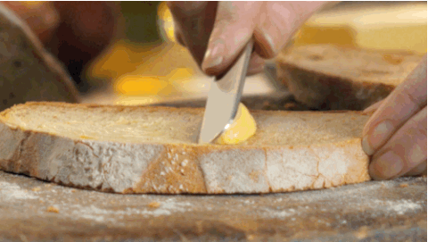

Tools
- A stove
- A butter knife
- A flat pan
Ingredients
- Butter (unsalted/salted it doesn't matter, I promise)
- 2 slices of bread (preferably not the 2 end pieces)
- 1-2 slices of your preferred cheese (or more, however much cheese you want)
Instructions
Step 1
Butter a single side on the 2 slices of bread.
Coat one side of each piece of bread so that it will crisp up and not burn when you put it in the pan.

Step 2
Preheat your pan on your stove over medium heat.
Let the pan heat up completely before putting your sandwhich on so you get an even cook.
Step 3
Assemble your sandwich in the pan.
Once the pan is hot, put the first slice of bread buttered-side down inside of it. Top the piece of bread with 1-2 slices of your favorite cheese before putting the second slice of bread on top with the buttered side face-up.
Step 4
Cook the bottom slice of bread for 3-4 minutes or until it’s golden brown.
Lift the sandwich with a spatula occasionally so you can check the color of the bottom slice.
Step 5
Flip the sandwich to cook the other side for 2-3 minutes.
Slide a spatula underneath the bottom slice of bread and quickly flip the sandwich over so the buttered side of the second slice is face down. Press down on the sandwich with your spatula to ensure the bread cooks evenly. Let the sandwich cook for until the bread’s golden brown and cheese has melted.
Step 6
Cut the sandwich before serving it.
Use a butter knife or bread knife to cut the sandwich diagonally to help it cool off before you eat it. Serve the sandwich while it’s still hot.